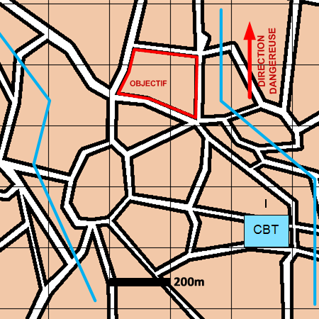

NIVEAU :Automate
ARME :Melee
MISSION :Ratisser
Objectif principal
Modalités d'exécution
Si l'objectif est une zone :
-
Le premier échelon se partage la zone et reconnait chaque secteur ;
-
GEN en appui mobilité ;
-
Les unités de mêlée restantes bouclent la zone ;
-
Le PEI surveille la zone pour aider la reconnaissance.
Si l'objectif est un bloc urbain:
-
Le premier échelon reconnait le bloc urbain ;
-
GEN en appui mobilité ;
-
Les unités de mêlée restantes bouclent le bloc urbain ;
-
Le PEI surveille le bloc urbain pour aider la reconnaissance.
-
Si un terroriste se situe dans la zone à ratisser alors il est identifié et capturé.
-
L'animateur a ensuite accès à l'ordre de conduite "déposer unité capturée" au niveau du pion pour déposer le terroriste à une position donnée.
Schéma de modélisation

Paramètres obligatoires
Fuseau : Zone de responsabilité.
Direction Dangereuse : Orientation privilégiée des capteurs.
Objectif
Zone :
Zone à ratisser.
BU :
Bloc Urbain à ratisser.
Paramètres optionnels
Ligne de coordination [LC]
Nombre d'échelons (2 par défaut)